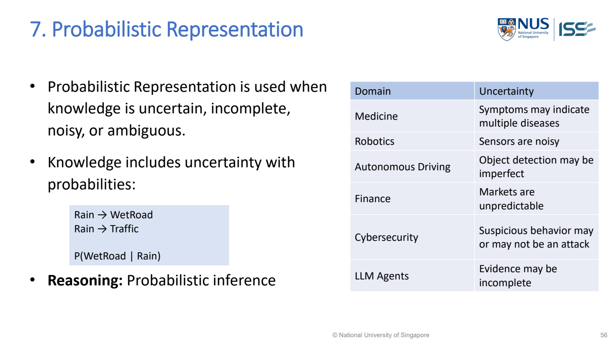

MR-16 Probabilistic Reasoning: Bayesian Inference（貝氏推理）
Probabilistic Reasoning: Bayesian Inference updates belief in a hypothesis（假設；待驗證的解釋） after observing evidence（證據；已觀察到的資訊）. It combines the prior（先驗機率；看證據之前） belief with how likely that evidence is under competing hypotheses.

MR-Day 2_JR_v1.pdf · PDF p.55 / printed slide 56. Original supplied slide, not redrawn.
Probabilistic Representation
Open representation format, meaning and Used Cases →Posterior from two evidence branches
- H
- Hypothesis（假設）: the proposed cause or class, e.g. man.
- D
- Evidence/data（證據／資料）: what was observed, e.g. long hair.
- P(H | D)
- Posterior（後驗機率）: probability of H after observing D — the answer sought.
- P(H)
- Prior（先驗機率）: probability of H before using D.
- P(D | H)
- Likelihood（概似）: probability of observing D if H is true. Do not reverse H and D.
- P(D)
- Evidence probability: probability of D across ALL possible hypotheses; it must be positive.
If the question does not give P(D), add the evidence contributions from all mutually exclusive, exhaustive hypotheses. For two classes: P(D)=P(D|H)P(H)+P(D|not H)P(not H).
- Male-and-long-hair mass=.5×.04=.02.
- Female-and-long-hair mass=.5×.50=.25.
- Total long-hair mass=.27.
- Desired posterior=.02/.27≈.074.
Interpret the result: About7.4%, shown as7% in lecture.
Lecture long-hair calculation in probability（機率） mass
Worked study example: The lecture’s worked example uses equal male/female proportions, 4% long hair among men and 50% among women. These are the numerical（數值型；以數量表示） values shown in the lecture, not measured demographic（人口屬性資料；如年齡與職業） evidence.
| Group | Prior | Long-hair likelihood（概似度） | Joint mass |
|---|---|---|---|
| Men | 0.5 | 0.04 | 0.020 |
| Women | 0.5 | 0.50 | 0.250 |
| All long-haired people | Both groups | Sum masses | 0.270 |
| Men given long hair | Desired mass / total | 0.020 / 0.270 | About 7.4% |
What this tells us: The answer is not 4%: that is long hair given male, the reverse conditional. The observed long-haired group contains much more female probability mass under these assumptions.
Lecture example redrawn · MR-Day 2_JR_v1.pdf · PDF p.41
Men/women × long/short hair: keep the groups separate
The lecture calculation uses P(man)=0.5, P(woman)=0.5, P(long hair | man)=0.04 and P(long hair | woman)=0.50. Under the long/short partition, short-hair probabilities below are calculated as 1 minus the corresponding long-hair probability.
| Group | Long hair | Short hair (complement) | All hair lengths |
|---|---|---|---|
| Man | 0.5 × 0.04 = 0.02 | 0.5 × 0.96 = 0.48 | 0.50 |
| Woman | 0.5 × 0.50 = 0.25 | 0.5 × 0.50 = 0.25 | 0.50 |
| Total | 0.27 | 0.73 | 1.00 |
- Given long hair: restrict attention to the 0.27 long-haired group.
- Wanted: man within that group. Divide 0.02 by 0.27 ≈ 0.074, shown as 7% in the lecture.
- Do not answer 4%. That is long hair given man, which reverses the condition.
MR-Day 2_JR_v1.pdf · PDF p.41 / printed slide 42. The short-hair entries are complements calculated from the lecture values, not a new dataset.
How does evidence change the probability of a cause?
- Bayesian updating compares explanations using both the prior frequency（頻率） and the likelihood of the observed evidence under each explanation.
- An impressive-looking piece of evidence can still yield a low posterior for a rare cause if the same evidence is common under alternatives.
- The denominator normalises all possible routes to the evidence.
- A simple frequency or probability-mass table is often clearer in an exam than an unexplained formula: first calculate each cause-and-evidence mass, then divide the desired mass by their total.
- A Bayesian model needs actual conditional probabilities and defensible dependencies.
- Drawing arrows or naming a Bayesian network（貝氏網路；機率依賴關係圖） does not create those values.
- The sample design discussion permits uncertain diagnostic inference（推論；由依據得出結論）, but warns not to invent numerical tables or turn model confidence（信賴度；前件出現時後件也出現的比例） directly into urgency.
Implementation steps and their purpose
- Name the hypothesis and observed evidence.
- Identify prior probabilities.
- Identify evidence likelihoods for the competing hypotheses.
- Multiply each prior by its evidence likelihood.
- Normalise across possible hypotheses to obtain updated beliefs.
Use the result and check it
Use the result and check it
Data, components and application
- Ignoring base rate → include prior → evidence alone can mislead.
- Unsupported conditional probabilities → collect/validate them → a graph or label（標籤；作比較的正確答案） does not supply numeric values.
How to evaluate it
Check that probabilities are coherent and sum appropriately; compare predictions with observed outcomes where available.
Build the answer in this order
- Identify hypothesis/evidence.
- Separate prior and likelihood.
- Calculate and normalise.
- Interpret uncertainty（不確定性） in the scenario.
Diagnose: Rare cause overpredicted
| What you observe | Why it happens | What to change | Why that helps |
|---|---|---|---|
| Rare cause overpredicted | Base rate omitted | Include prior and competing evidence mass | Evidence can occur often under other causes |
| High score treated as urgent | Diagnosis（診斷；判斷可能的疾病或故障原因） and action conflated | Apply separate validated urgency criteria | Likelihood of a condition differs from cost of delay |
Common wrong answers and the exact correction
- Probability of evidence given cause is not probability of cause given evidence.
- High diagnostic probability is not automatically high urgency.
When would this calculation be useful?
Use when uncertainty matters and the case provides or justifies probabilities, rather than forcing a certain conclusion（結論）.
| Scenario cue | Suitable choice | Why it fits |
|---|---|---|
| Prior and evidence likelihoods supplied | Bayesian update | Both initial frequency and evidence strength can be combined |
| No defensible probabilities given | Use qualitative（定性的；用類別或描述而非數值表達）/rule design or state data needed | Do not manufacture numerical confidence |
An answer you could write
An answer you could write
- The long-hair probability masses are.5×.04=.02 for men and.5×.50=.25 for women, so male given long hair is.02/.27≈7.4%.
- The4% likelihood is the reverse conditional, not the requested posterior; these probabilities describe the lecture’s hair example; they do not specify diagnostic urgency.
Where this is tested in the sample papers
ISY5002 Q2(d) — Naive Bayes（樸素貝氏法；給定類別後特徵獨立） from categorical maintenance records
What the question requires
- Count class priors from the nine records.
- Count Fair vibration（振動；來回震動的訊號） and Low acoustic（聲學的；與聲音量測有關） within each class.
- Multiply prior and likelihoods under the stated conditional-independence assumption.
- Normalize the two scores and select the higher class.
Proposed answer points
- Carryback（回帶殘料；卸料後仍黏留在輸送帶的物料）: (5/9)×(1/5)×(3/5)=1/15. Mistracking（輸送帶跑偏；未沿正確位置運行）: (4/9)×(2/4)×(2/4)=1/9.
- Normalize: Carryback=0.375; Mistracking=0.625. Predict Mistracking under the Naive Bayes model.
Avoid: Independence is conditional on cause, not unconditional independence of sensors（感測器）. No zero counts occur in these two likelihoods; smoothing is not required to reproduce this calculation.
Full question-to-concept map →